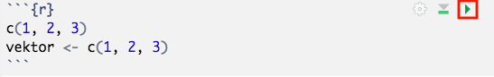

install.packages("rmarkdown")25 R Markdown
Mit R Markdown (Endung .Rmd) können wir R Code (z.B. für Datenanalyse und -visualisierung) und Text in einem Dokument verbinden. Dabei dient das R Markdown als “Bauplan” für das finale Output-Dokument (z.B. html, pdf oder Word).
Was ist Markdown?
Markdown ist eine Auszeichnungsprache (markup language). Diese werden für Formatierung und Gliederung von Text genutzt. Weitere Auszeichnungsprachen wie YAML und LaTex, die wir uns später noch genauer anschauen werden, können auch in R Markdown integriert werden.
Warum R Markdown?
Wir können R Markdown nicht nur nutzen, um schöne Zusammenfassungen für R Übungen zu schreiben. Wir können ganz einfach Tabellen (z.B. Korrelationstabellen oder Ergebnistabellen für eine ANOVA) oder Grafiken in R erstellen und diese dann in unsere Abschlussarbeit übernehmen1. So entfällt das lästige händische Erstellen der Tabellen, bei dem sich häufig Flüchtigkeitsfehler einschleichen.
Im Rahmen dieses Kapitels lernen wir, wie wir R Markdown Dokumente erstellen und verändern können, welche Möglichkeiten es gibt, R Code zu integrieren und wie wir Text gestalten können.
Achtung: Wenn nicht anders vermerkt, gelten alle vorgestellten Inhalte in diesem Kapitel zu Text- und Codebarbeitung für die Outputformate pdf, Word und html.
Bevor es los gehen kann müssen wir zuerst das Paket rmarkdown installieren, um R Markdown Dokumente erstellen zu können
25.1 Neues R Markdown Dokument anlegen
Nachfolgend sehen wir, wie wir ein neues R Markdown Dokument (Rmd) anlegen können.
Wir können zwischen verschiedenen Outputformaten, u.a. html, pdf und Word, wählen.
So sieht das neu geöffnete Rmd aus.
Mit dem Knit-Button können wir unser Output-Dokument erstellen.
Alternativ können wir zum Knitten einen Kurzbefehl nutzen:
- Windows: Shift + Ctrl + K
- Mac: Shift + Cmd + K
Für die Outputformate html und pdf bekommen wir in einem neuen Fenster in R eine Vorschau davon. Für Word Dokumente öffnet sich (ggf.) Microsoft Word.
25.1.1 YAML
Gehen wir nochmal einen Schritt zurück und schauen uns das Rmd genauer an. Der Code ganz oben im Dokument ist der YAML Header. In diesem legen wir globale Dokument-Optionen fest. Nachfolgend sehen wir einige.
Achtung: Standardmäßig steht hier
output: html-document(bzw.output: pdf_documentoderoutput: word_document) hintereinander in einer Zeile. Um weitere YAML Optionen ergänzen zu können, müssen wirhtml_document(bzw.pdf_documentoderword_document) in eine neue Zeile schreiben und einen Doppelpunkt dahinter ergänzen. Die YAML Optionen kommen jeweils auch in eine eigene Zeile.
Mit toc: true können wir eine Gliederung (table of contents) einfügen.
Diese können wir permanent anzeigen lassen, sodass sie trotz Scrollen immer an der gleichen Stelle (links) bleibt. Dazu ergänzen wir toc_float: true.
Achtung: Diese Option funktioniert nur in html.

Wir können unsere Überschriften auch automatisch nummerieren lassen indem wir number_sections: true nutzen.
Die Gestaltung können wir mit der Option theme anpassen. Hier wurde das Theme journal genutzt. Hier finden wir eine Übersicht über alle bestehenden Möglichkeiten.
Achtung: Diese Option funktioniert nur in html.
Einen Überblick über bestehende YAML Optionen finden wir hier.
25.2 Text
Normaler Text wird in R Markdown einfach geschrieben. Im Gegensatz dazu konnten wir im R Skript nur Anmerkungen machen indem wir ein # vor unseren Text gesetzt haben.
Nachfolgend schauen wir uns Möglichkeiten der Gestaltung von Text (d.h. die nutzbaren Auszeichnungssprachen) an. Das sind Markdown, html und LaTex.
Eine kurze Übersicht über Textgestaltung mit Markdown können wir auch in RStudio angezeigt bekommen, wenn wir in der oberen Taskleiste in RStudio auf Help und dann auf Markdown Quick Reference klicken.
25.2.1 Überschriften
Um Überschriften zu setzen, schreiben wir ein bzw. mehrere # an den Anfang einer Zeile. Die Überschrift wird dann im Rmd farblich hervorgehoben. Je mehr # wir setzen, desto kleiner wird die Überschrift. Wie die einzelnen Überschriften aussehen, hängt von unserem Design (theme im YAML Header oder Template) ab.


Achtung: Im R-Skript konnten wir # zum Kommentieren nutzen. Das funktioniert hier auch, aber nur in den Code Chunks. Um Textpassagen auszukommentieren, können wir den html-Kommentar-Tag
<!-- -->nutzen. Mit folgendem Kurzbefehl können wir sowohl Text als auch Code auskommentieren (funktioniert in html und pdf):
- Windows/Linux: Ctrl + Shift + C
- Mac: Cmd + Shift + C
25.2.2 Hervorhebung
Wir können unseren Text auch fett und kursiv schreiben.


Es gibt zwei verschiedenen Optionen (* oder _) damit wir beide kombinieren können, d.h. fett und kursiv schreiben können. Dabei ist Reihenfolge (ob zuerst fett oder kursiv) egal. Wir müssen nur darauf achten, dass das Zeichen, welches zuletzt eingefügt wurde, auch zuerst beendet wird (z.B. **_eine Möglichkeit_**).
25.2.3 Zeilenumbruch
Es gibt mehrere Möglichkeiten, einen Zeilenumbruch herbeizuführen. Entweder wir machen mindestens zwei Leerzeichen ans Ende einer Zeile oder wir nutzen einen Backslash (\).
25.2.4 Verlinkung
Wir können in unserem Output-Dokument auch auf externe (Web-)Quellen verlinken. Dazu nutzen wir [verlinkter Text](http://example.com).
Wenn unser Output-Dokument ein html ist, ist es benutzerfreundlicher, wenn sie die Webseite in einem neuen Fenster öffnet. Dazu nutzen wir den html Tag <a href="http://example.com" target="_blank">verlinkter Text</a>.
In html haben wir zusätzlich die Möglichkeit, innerhalb eines Dokuments zu verlinken. Am einfachsten ist es, auf eine Überschrift zu verlinken. Dazu nutzen wir einfach eckige Klammern, in die wir den Namen einer Überschrift schreiben: [Überschrift].
25.2.5 Formeln
Wir können Formeln und mathematische Symbole mittels LaTex integrieren. Bei der Installation von dem Paket rmarkdown wird (standarmäßig) automatisch das Paket tinytex heruntergeladen. Das ermöglicht uns die Nutzung von LaTex. Das machen wir mit $ und speziellem LaTex-Code. Einen guten Überblick darüber, wie wir wichtige mathematische Symbole in LaTex schreiben, gibt uns diese Seite.
Um Formeln im Fließtext zu schreiben (sog. Inline Formeln), nutzen wir einfache Dollarzeichen z.B. $\alpha=0.05$ wird zu \(\alpha=0.05\).
Um Formeln als (zentrierten) Blocksatz zu schreiben nutzen wir doppelte Dollarzeichen z.B.
$$ \sigma^2= \sum_{i =1}^{n} \frac{(x_i - \bar{x}) ^2}{n-1} $$ wird zu \[ \sigma^2= \sum _{i =1} ^{n} \frac{(x_i - \bar{x}) ^2} {n-1} \]
Achtung: Leerzeichen haben im LaTex Code keinen Einfluss. Sie sind hier nur der Übersichtlichkeit halber eingefügt. Wenn wir in den Formeln Leerzeichen ahben wollen, müssen wir dafür speziellen LaTex Code nutzen.
25.3 R-Code
Nun schauen wir uns an, welche Möglichkeiten es gibt, R-Code und/oder deren Outputs in unser Dokument zu integrieren.
25.3.1 Code Chunk
Allen Code, denn wir sonst in ein R-Skript geschrieben haben, und der dann in der Konsole ausgeführt wurde (und ggf. im Viewer angezeigt wurde, d.h. Plots), schreiben wir in sogenannte Code Chunks.
Wir können Code Chunks einfügen indem wir auf Insert > R klicken …

… oder einen Kurzbefehl nutzen:
- Windows: Ctrl + Alt + I
- Mac: Alt + Cmd + I
Im Rmd sind die Code Chunks (in der Standardeinstellung) grau hinterlegt.

Wenn wir auf den Pfeil ganz rechts klicken, können wir den Code in dem Chunk ausführen. Darunter erscheint ggf. der Output des Codes.
Zum Ausführen des Code Chunks gibt es können wir auch einen Kurzbefehl nutzen:
- Windows: Shift + Ctrl + Enter
- Mac: Shift + Cmd + Ctrl Enter
Achtung: Wenn wir beim Knitten Fehlermeldungen angezeigt bekommen, die auf den Code zurückzuführen sind, sollten wir diesen erstmal in einem “normalen” R-Skript ausführen. So können wir schauen, ob das Problem direkt im Code oder in der Einbettung in R Markdown liegt.
Im Output-Dokument werden standarmäßig auch der Code und ggf. der Output angezeigt.
1+2+3[1] 6vektor <- c(1, 2, 3)vektor[1] 1 2 3mean(vektor)[1] 2Es gibt Optionen zur Einstellung des Verhaltens der Code Chunks, die wir oben im Code Chunk innerhalb der geschweiften Klammern {r, ...} festlegen. Zwei davon werden wir häufiger brauchen: echo und eval.
Mit echo legen wir fest, ob wir den Code im Output-Dokument anzeigen wollen ({r, echo=TRUE}) oder nicht ({r, echo=FALSE}). Mit eval legen wir fest, ob wir den Code ausführen wollen ({r, eval=TRUE}) oder nicht ({r, eval=FALSE}).
Es gibt auch die Möglichkeit, globale Optionen für das Verhalten der Chunks festzulegen. Diese werden auf jeden Code Chunk angewendet (außer wenn wir in einem Code Chunk eine andere Option spezifizieren) und verhindern dadurch überflüssige Wiederholungen. Globale Optionen legen wir mit knitr::opts_chunk$set(...) fest. Die Funktion kommt direkt in den Code Chunk (und nicht wie bei den Chunk-spezifischen Optionen in {r}).

include=FALSE führt den Code aus, zeigt den Output des Codes aber nicht im Output-Dokument an. Das ist eine kürzere Alternative zu {r, echo=FALSE, eval=TRUE}, wenn der Output aus Zeichen besteht (z.B. das Ergebnis einer Rechnung; der Inhalt eines Objektes) bzw. {r, echo=FALSE, fig.show='hide'} wenn der Output eine Grafik ist.
Code Chunks können auch benannt werden, indem in den geschweiften Klammern nach einem Leerzeichen hinter dem r der gewünschte Name eingetragen wird, z.b. {r, ...} für den Namen setup. Das hilft uns bei der Orientierung, weil wir die Namen in der Dokumentübersicht in RStudio angezeigt bekommen. Wir müssen allerdings darauf achten, denselben Namen nicht mehrmals zuzuweisen. Sonst bekommen wir eine Fehlermeldung.
25.3.2 Inline Code
Wenn es sich bei dem Output (von Code) um Zeichen handelt (und nicht um z.B. Tabellen und Grafiken), können wir diesen auch direkt in den Fließtext integrieren. Dazu nutzen wir r ....
Wir können damit z.B. Inhalte eines Objektes oder das Ergebnis einer (mathematischen) Funktion (ohne den Code) ausgeben lassen. Der Output wird außerdem so formatiert wie der Fließtext.
Im vorhergehenden Abschnitt haben wir beispielsweise das Objekt vektor in einem Code Chunk definiert. Dessen Inhalte können wir mit r vector ausgeben lassen: 1, 2, 3
Wir können auch den Mittelwert von vektor berechnen mit r mean(vector): 2
Nur mit den `...` (ohne r) können wir außerdem Text hervorheben.
25.3.3 Grafiken, Bilder und Tabellen
Wir können mit R-Code in den Code Chunks außerdem auch Grafiken und Tabellen erstellen und ausgeben, sowie auch Bilder, die nicht im Rmd erstellt wurden, anzeigen.
Bei Grafiken müssen wir nichts weiter beachten. Wir können denselben R-Code nutzen wie auch in einem R-Skript (.R).
Wenn wir lokal gespeicherte Bilder integrieren wollen, können wir die Funktion include_graphics("dateipfad") aus dem Paket knitr nutzen. Dieses wurde (standardmäßig) automatisch heruntergeladen, als wir rmarkdown installiert haben.
library(knitr)
include_graphics("dateipfad")Schauen wir uns noch Code Chunk Optionen an, die wir für Grafiken und Bilder nutzen können. Diese schreiben wir wieder oben in den Code Chunk in {r, ...}.
Mit out.width (Breite) und out.height (Höhe) können wir die Größe der Abbildungen im Outputdokument kontrollieren. Wir nehmen dafür am besten ‘…px’ (pixel). Wenn wir wollen, dass das Seitenverhältnis beibehalten wird, sollten wir immer nur die Breite oder die Höhe ändern.
Mit fig.align können wir die Ausrichtung beeinflussen. Gültige Optionen sind: 'left', 'right' and 'center'.
Um Tabellen zu erstellen, gibt es verschiedene Funktionen (die nur in Rmd funktionieren). Wir schauen uns im Folgenden eine an (und zwar dieselbe, die auch für die Inhalte der R-Lernplattform genutzt wird).
Zuerst benötigen wir einen Beispieldatensatz. Wir nutzen den Datensatz women, der im Basispaket datasets enthalten ist und den wir mit der Funktion data() in unser Environment bekommen.
data("women")
women height weight
1 58 115
2 59 117
3 60 120
4 61 123
5 62 126
6 63 129
7 64 132
8 65 135
9 66 139
10 67 142
11 68 146
12 69 150
13 70 154
14 71 159
15 72 164So sieht es aus, wenn wir den Datensatz einfach ausgeben. Schönere Tabellen erhalten wir mit der Funktion kable() aus dem Paket kableExtra.
install.packages("kableExtra")
library(kableExtra)
kable(women)| height | weight |
|---|---|
| 58 | 115 |
| 59 | 117 |
| 60 | 120 |
| 61 | 123 |
| 62 | 126 |
| 63 | 129 |
| 64 | 132 |
| 65 | 135 |
| 66 | 139 |
| 67 | 142 |
| 68 | 146 |
| 69 | 150 |
| 70 | 154 |
| 71 | 159 |
| 72 | 164 |
Es gibt noch diverse weitere Optionen, Tabellen zu verschönern. Eine ausführliche Dokumentation dazu gibt es auf dieser Seite.
25.4 Weiterführend
25.4.1 Templates
Templates (Vorlagen) besitzen ein vorgefertigtes Design und ggf. sogar weitere Funktionalitäten für unser Output-Dokument.
Wenn wir Templates nutzen, sind in diesen ggf. nicht alle bzw. noch zusätzliche YAML Optionen nutzbar.
Wir wollen nun noch zwei Templates vorstellen, die für Projektdokumentation bzw. Veröffentlichungen hilfreich sein können. Für beide müssen wir jeweils ein zusätzliches Paket herunterladen.
Nach der Installation der Pakete finden wir die Templates hier:
25.4.1.1 distill
Mit dem Template Distill Article aus dem Paket distill können wir html Dokumente erstellen.
Die Inhalte der R Lernplattform basieren auch auf diesem Template. Allerdings wurden einige Designänderungen vorgenommen und zusätzliche Funktionen eingefügt.
install.packages("distill")In diesem haben wir u.a. folgende zusätzliche (bzw. geänderte) Funktionalitäten:
- Seitennotizen (am rechten Rand)
- Bilder und Grafiken können über die Seitenränder hinaus gehen (siehe Beispiel unten)
- Fußnoten werden angezeigt, wenn man mit der Maus über sie fährt2
- Gliederung (nur) ganz oben im Dokument
Die YAML Optiontoc_floatbewirkt in distill etwas anderes. Mittruewird die Gliederung am linken Rand angezeigt, wenn das Fenster, in dem das Outputdokument geöffnet wird (zumeist der Brwoser), größer gleich 1000px ist. Mitfalsewird die Gliederung immer mittig angezeigt. - Appendix (wenn z.B Fußnoten oder Referenzen eingefügt)
Eine ausführliche Dokumentation zu den Funktionalitäten des Templates und ihrer Nutzung finden wir hier.

25.4.1.2 papaja
Mit dem Paket papaja (Preparing APA Journal Articles) bekommen wir ein Template, um Artikel ganz einfach im APA-Style zu schreiben. Das Outputformat ist pdf.
Achtung: Bevor wir das Paket herunterladen, müssen wir schauen, ob die folgenden zwei Voraussetzungen erfüllt sind:
- RStudio Version größer gleich 0.98.932
- TeX Distribution (neuer als 2013; Links zu den Tex Distributions sind z.B. auf der Entwicklerseite, welche unten verlinkt ist, zu finden)
Weil das Paket noch nicht über den CRAN Mirror verfügbar ist, müssen wir es über die Github-Seite des Entwicklers herunterladen. Dazu benötigen wir wiederum das Paket devtools.
install.packages("devtools")
library(devtools)
install_github("crsh/papaja")In diesem Video wird die Nutzung des Templates erklärt.
Wenn wir das kostenlose Literaturverwaltungsprogramm Zotero nutzen, können wir zusätzlich direkt daraus unsere Zitationen importieren. Damit wird auch automatisch eine Bibliographie erstellt. Um Zotero und R Makrdown gemeinsam nutzen zu können, müssen wir das Paket citr (in R) sowie die Software Better BibTex (auf unserem Rechner) installieren.
# Installation von citr:
install.packages("citr")
# Installation von Better BibTex siehe LinkWeitere Informationen finden wir auf der Githubseite des Entwicklers.
Um eine möglichst exakte Replikation der Funktionen zu gewährleisten gibt es im folgenden relevante Angaben zum System (R-Version, Betriebssystem, geladene Pakete mit Angaben zur Version), mit welchem diese Seite erstellt wurde.
Achtung: Es ist sinnvoll, die nachfolgende Funktion in einen Code Chunk im eigenen Rmd einzubetten.
sessionInfo()R version 4.3.3 (2024-02-29)
Platform: x86_64-pc-linux-gnu (64-bit)
Running under: Ubuntu 22.04.3 LTS
Matrix products: default
BLAS: /usr/lib/x86_64-linux-gnu/openblas-pthread/libblas.so.3
LAPACK: /usr/lib/x86_64-linux-gnu/openblas-pthread/libopenblasp-r0.3.20.so; LAPACK version 3.10.0
locale:
[1] LC_CTYPE=en_US.UTF-8 LC_NUMERIC=C
[3] LC_TIME=en_US.UTF-8 LC_COLLATE=en_US.UTF-8
[5] LC_MONETARY=en_US.UTF-8 LC_MESSAGES=en_US.UTF-8
[7] LC_PAPER=en_US.UTF-8 LC_NAME=C
[9] LC_ADDRESS=C LC_TELEPHONE=C
[11] LC_MEASUREMENT=en_US.UTF-8 LC_IDENTIFICATION=C
time zone: Etc/UTC
tzcode source: system (glibc)
attached base packages:
[1] stats graphics grDevices utils datasets methods base
other attached packages:
[1] kableExtra_1.4.0
loaded via a namespace (and not attached):
[1] digest_0.6.34 R6_2.5.1 fastmap_1.1.1 xfun_0.42
[5] magrittr_2.0.3 glue_1.7.0 stringr_1.5.1 knitr_1.45
[9] htmltools_0.5.7 rmarkdown_2.26 lifecycle_1.0.4 xml2_1.3.6
[13] cli_3.6.2 viridisLite_0.4.2 scales_1.3.0 svglite_2.1.3
[17] systemfonts_1.0.6 compiler_4.3.3 rstudioapi_0.15.0 tools_4.3.3
[21] munsell_0.5.0 evaluate_0.23 colorspace_2.1-0 yaml_2.3.8
[25] rlang_1.1.3 jsonlite_1.8.8 htmlwidgets_1.6.4 stringi_1.8.3 Für Informationen zur Interpretation dieses Outputs schaut auch den Abschnitt Replizierbarkeit von Analysen des Kapitels zu Paketen an.
Wir können die Tabellen und Grafiken z.B. aus einem Word Dokument, welches wir mit R Markdown erstellt haben, rauskopieren und in das Word Dokument einfügen, in welchem wir unsere Arbeit schreiben. Wir können aber auch direkt unsere Arbeit in einem R Markdown Dokument schreiben (und daraus ein Word Dokument o.ö. erstellen).↩︎
wie hier↩︎